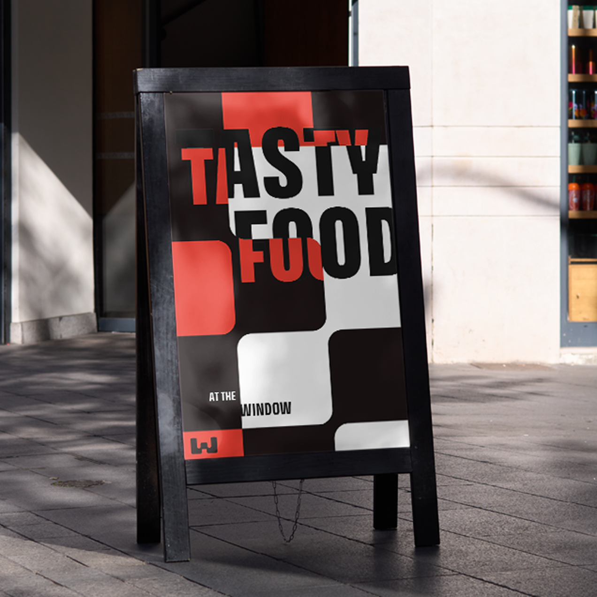
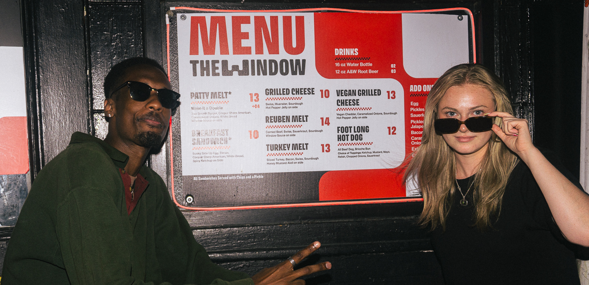
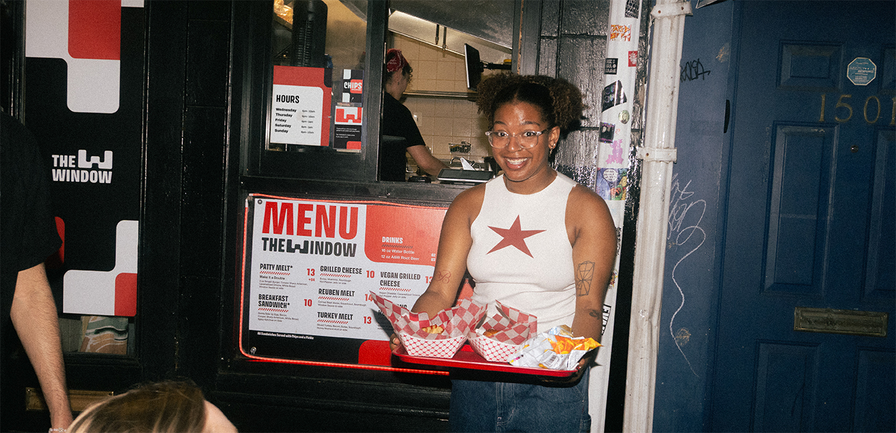

The Window
Philly's new hole in the wall
familiar
casual
comforting
quick
satisfying
We originally met with Oskar and Katrina about T-shirt designs for Bob & Barbara’s Lounge when they shared that they needed a brand identity and storefront design for the new restaurant they’d be opening up next door.

The Window is the take-out restaurant for Philly landmark Bob & Barbara’s Lounge. B&B’s feels like it hasn’t changed in 60 years because it hasn’t. The Window is an extension of that feeling, just designed in the modern day.
The menu consists of greasy comfort foods to soak up all the drinking. We developed a grid system based on the classic checkered-floor pattern of historic American diners and customized it to The Window by “goo-ifying” the squares together.
The food at The Window is a “twist on the classics.” This twist is not to be flashy, but modern.
We also developed a typographic technique that is inspired by the physics of looking through a refracted glass window pane.
 There is a lot that humankind doesn’t agree on, but we can all agree that eating a delicious warm patty melt on a cold Friday night-out at the bar is the greatest feeling in the world.
